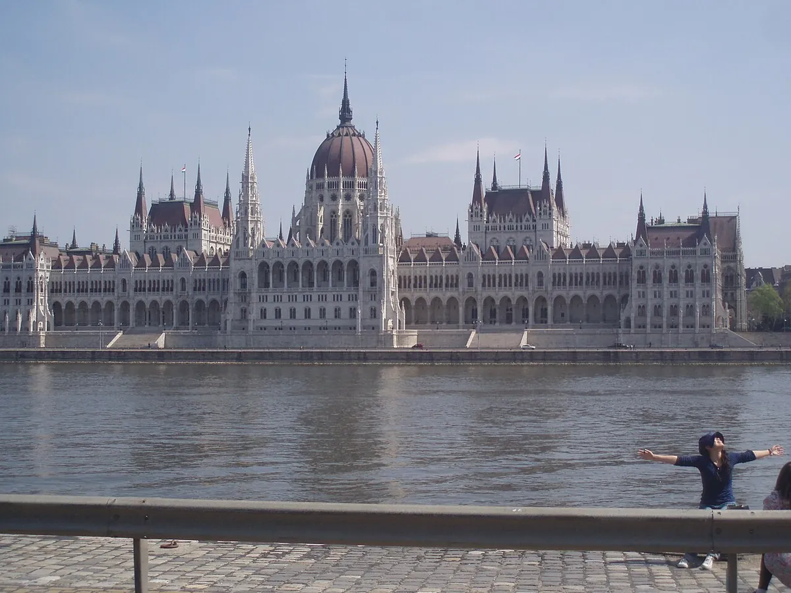
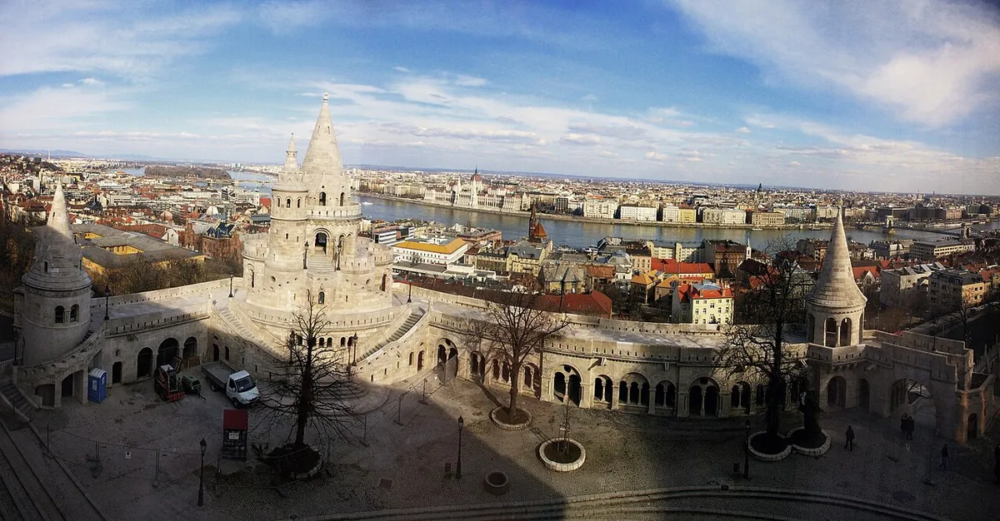
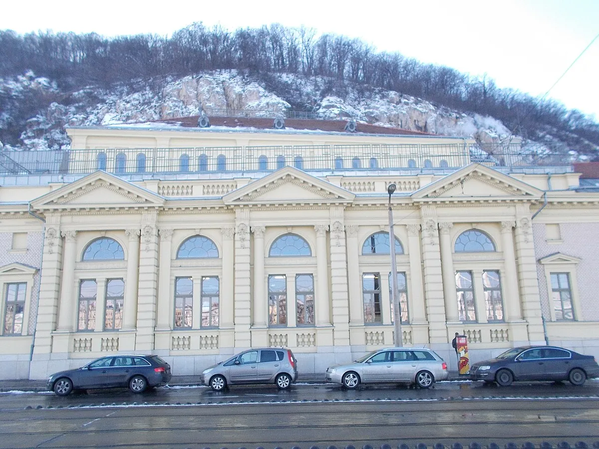
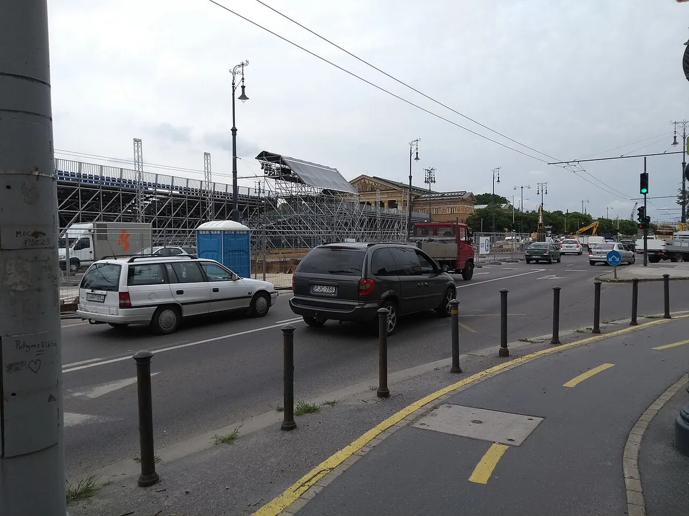
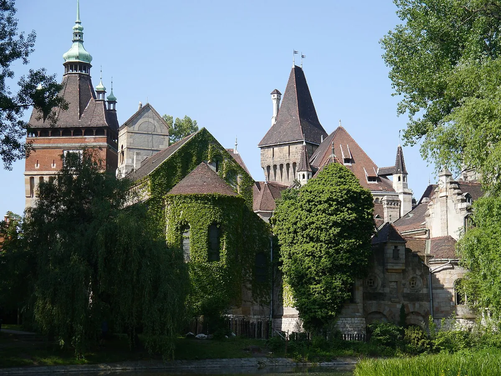

1
13.00✈️ Resa
Flyg och Uber till hotellet
Beställ en licensierad lokal taxi i Uber-appen efter landning. Prisuppskattning och kortbetalning visas i appen.
Termalbad, stadspromenader, vinbarer och gott om tid att bara vara lediga.





En mjuk start nära hotellet med promenad och middag i centrum.
Beställ en licensierad lokal taxi i Uber-appen efter landning. Prisuppskattning och kortbetalning visas i appen.
Incheckning och en kort paus innan ni går vidare.
En finare specialbutik för ungerskt vin och bubbel på Andrássy út 41. Det är ett aktuellt alternativ som finns i kedjans officiella butikslista. Adressen Szent István tér 11 i bilden finns inte med där.
Promenera via Sankt Stefansbasilikan till parlamentet och Skorna vid Donau. DiVino Bazilika passar som första eller sista stopp före middagen.
Helgens huvuddag: utsikter i Buda följt av ett långt, lugnt spabesök.
Börja tidigt för lugnare gränder och bättre plats vid utsiktspunkterna.
Fortsätt söderut genom slottsområdet och ta lunch innan badet.
Helgens enda spa. Cirka 450 kr per person beroende på dag, paket och växelkurs.
Efter vila och middag: välj den avslappnade Kadarka Wine Bar eller en kvällskryssning, beroende på energi och väder.
En rymlig dag med park på morgonen, shopping på eftermiddagen och fri kväll.
Gå genom parken till slottsområdet och ät lunch innan ni åker vidare.
Shoppingblocket ligger samlat så att resten av dagen inte behöver styras av butiker.
Börja på stämningsfulla DOBLO på Dob utca 20 och fortsätt till Szimpla Kert om ni vill ha mer kvällsliv.
Håll morgonen enkel och lämna marginal för frukost, utcheckning och stationen.
Kontrollera avgångsstation och tågläge kvällen före.
RegioJet från Déli är bästa balansen mellan pris och tid. Railjet från Keleti är den enklaste reserven. Den separata Wien-guiden har livekontrollerade tider, priser, bagage och stationsvägar.
Modern och livlig vinbar vid basilikan med ungerska viner från unga vinmakare och stor uteservering. Szent István tér 3.
Officiell sida GångvägAvslappnad kvartersbar med fokus på ungerska vinregioner. Király utca 42; den officiella sidan anger öppet 16.00–00.00 alla dagar.
Officiell sida GångvägStämningsfull vinbar i judiska kvarteren med tegelinteriör, ungerska viner och ofta musik. Dob utca 20; passar naturligt före eller efter Szimpla Kert.
Officiell sida GångvägI Budapest beställer ni licensierade lokala taxibilar via Uber-appen. Appen visar prisuppskattning, föraruppgifter och resan i realtid.
Uber BudapestUber uppger att kort och PayPal kan användas. Priset räknas enligt lokal taxameter och påverkas av sträcka, tid och trafik.
BKK:s taxiinformationCentrum, basilikan och flera vinbarer ligger på bekvämt gångavstånd. Använd Uber främst till flygplatsen, Buda, Rudas och Arena Mall.
Spa, taxi, vinbarer och växelkurs bör kontrolleras på de officiella sidorna före resan.